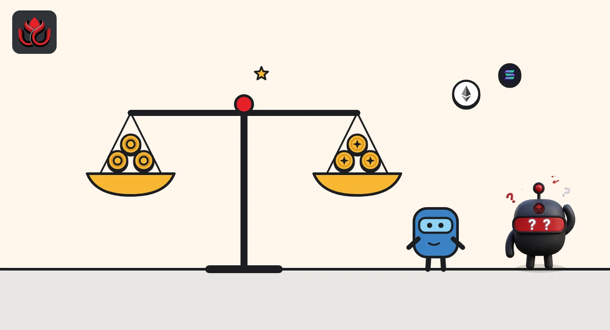
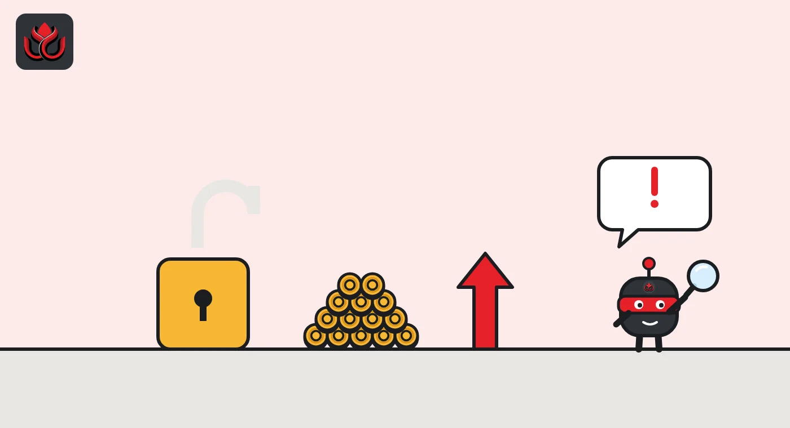

Aave weighs a 60 million cap for USAT on Avalanche, where its supply is zero
Aave Labs wants USAT, the Anchorage-issued dollar stablecoin built with Tether's technology, on Aave V4's Avalanche hub. Risk firm LlamaRisk backs it as borrow-only at a fixed $1, but flags an uncapped mint key and a bridge that is not live yet.
Key points
- Aave Labs proposed on October 19, 2026, to list USAT on Aave V4's Avalanche Core hub through the Direct-to-AIP route.
- LlamaRisk backed it on October 26 as borrow-only, priced at a fixed $1, with a 60 million USAT supply cap.
- USAT had about 183.3 million tokens on Ethereum and none on Avalanche, where the owner can mint with no cap or rate limit.
What Aave Labs proposed
On October 19, 2026, Aave Labs posted a Direct-to-AIP proposal to add USAT to the Aave V4 Core hub on Avalanche. Under that route, the plan goes from forum feedback and the risk providers' settings straight to an AIP, the onchain vote that makes it final.
The proposal describes USAT as a dollar stablecoin issued by Anchorage Digital Bank, N.A., a national trust bank supervised by the OCC, redeemable one-to-one for US dollars and subject to the GENIUS Act, the US stablecoin law whose OCC rules we covered here. Tether supplies the token technology, its Hadron platform, as a partner, per LlamaRisk's assessment.
Aave Labs pitched USAT as a way to serve institutions that want a stablecoin under the US federal framework. A separate proposal, posted October 9 and raised to a Snapshot vote on October 15, covers USAT on Aave's Ethereum markets. Aave Labs disclosed that it has no financial relationship with Anchorage, Tether or their affiliates.
Borrow-only, at a fixed $1
LlamaRisk's recommendation, posted October 26, is cautious. USAT would be borrowable but not usable as collateral. Its price inside Aave would be hard-coded at $1, because Chainlink publishes no USAT/USD feed on Avalanche, Ethereum or Celo. LlamaRisk said collateral use would need such a feed on Avalanche first.
That limits the damage if USAT slips below $1: a depeg cannot move anyone's health factor, because nobody borrows against it. The risk LlamaRisk flags runs the other way. If USAT trades above $1, borrowers pay more to buy it back and repay.
- Supply cap: 60 million USAT on the main market.
- Borrow cap: 55 million USAT, which the forum table splits into 5 million on the main market and 50 million on the Ethena Ecosystem spoke. Both caps apply only once $5 million of DEX liquidity is seeded on Avalanche.
- Interest rates copy USDT on the same hub: a 0% base rate, rising 4.9% up to 94% usage and 20% beyond it, with a 10% liquidity fee.
LlamaRisk later edited its assessment, which now also lists a tokenized USAT spoke with a 1.5 million supply cap and no borrowing. The assessment was last edited on October 27, and its reply in the proposal thread was last edited on October 29.

No supply and no market on Avalanche
The Avalanche token is a bridged copy. Its value and redemption depend on Anchorage on Ethereum. When LlamaRisk checked, USAT had zero supply on Avalanche and no trading venue there.
On Ethereum, about 183.3 million USAT circulated as of October 23. Ownership was concentrated, as the chart shows. Liquidity was thin: the main Curve pool held 7.16 million USAT against 2.85 million USDT, and LlamaRisk estimated that selling 3 million USAT into it would lose about 5.0%, and selling 5 million about 42.9%. CoinGecko's average price had sat 9 to 14 basis points (0.09% to 0.14%) below $1 since October 12, it said.
Share of Ethereum USAT supply held by the largest wallets, October 12, 2026
%
Reserves and who can redeem
The reserve attestation LlamaRisk used, by Deloitte & Touche for August 31, 2026, and signed September 28, showed $176,391,828 of reserves against 175,731,350 tokens, a surplus of about $0.66 million, per LlamaRisk. About 90% of the reserves sat in Treasury repo. That report covers Ethereum and Celo, not Avalanche. Anchorage has since posted a report for September 30, 2026, on the same page.
Only Anchorage clients in good standing can redeem at par. Everyone else has to sell into a market. Avalanche is not yet enabled for client minting or redemption, so a holder there would need a DEX pool that does not exist yet or the bridge back to Ethereum.

The red flags LlamaRisk found
- Uncapped mint: the owner can mint USAT directly on Avalanche with no cap or rate limit.
- One set of keys: every privileged role on Avalanche, Ethereum and Celo sits with a single 3-of-5 multisig, with no timelock.
- Bridge: the Ethereum-to-Avalanche route is not live yet, has no rate limit in either direction and fails 3 of the 4 bridge standards LlamaRisk applies.
- Bug bounty: the published scope names no Avalanche contract.
LlamaRisk asked Anchorage to add a rate limit within one month of listing. It found no incidents as of October 23 and said the Avalanche token was audited by Guardian in September and OpenZeppelin in October. More on the token is on USAT's site.
Timeline
Date of the USAT reserve attestation LlamaRisk used
Aave Labs proposes USAT for Aave's Ethereum markets
The Ethereum proposal goes to a Snapshot vote
Aave Labs posts the Avalanche Direct-to-AIP proposal
LlamaRisk backs a borrow-only listing at a fixed $1 price
LlamaRisk edits its posts; the assessment now lists a tokenized USAT spoke
AIP vote for final onchain approval
LC Insight analysis
This section is our reading of the facts above, not a statement of fact.
- Borrow-only is the right first step. With a fixed $1 price and no collateral use, a USAT wobble cannot trigger liquidations on Aave, so the downside stays small while a market forms.
- Demand is the open question. A 60 million cap on a chain with zero USAT only matters if someone seeds $5 million of DEX liquidity and borrowers want a bank-issued dollar over USDT.
- Watch the uncapped mint and the multisig with no timelock. They are common at issuer-run stablecoins, but on a lending market they are the levers that matter if something breaks.
What's next
- The AIP vote and the final caps
- Whether Anchorage turns on minting and redemption on Avalanche
- A bridge rate limit within a month, as LlamaRisk asked Anchorage
- The separate USAT listing on Aave's Ethereum markets
Disclaimer. This article is based on public information and the sources listed below as of the update time shown. It is for information only and is not investment, legal or tax advice. Figures may change as companies and authorities publish new data.
Sources
- Aave governance forum, Aave Labs, [Direct to AIP] Onboard USAT to Aave V4 Core Instance on Avalanche (October 19, 2026)
- Aave governance forum, LlamaRisk, Tether America USD (USAT) on Aave Avalanche Assessments (October 26, 2026)
- Aave governance forum, [ARFC] Onboard USAT to Aave V3 Core Instance and Aave V4 Core Hub on Ethereum (October 15, 2026)
- Anchorage Digital, USAT reserve attestations
- USAT, official site